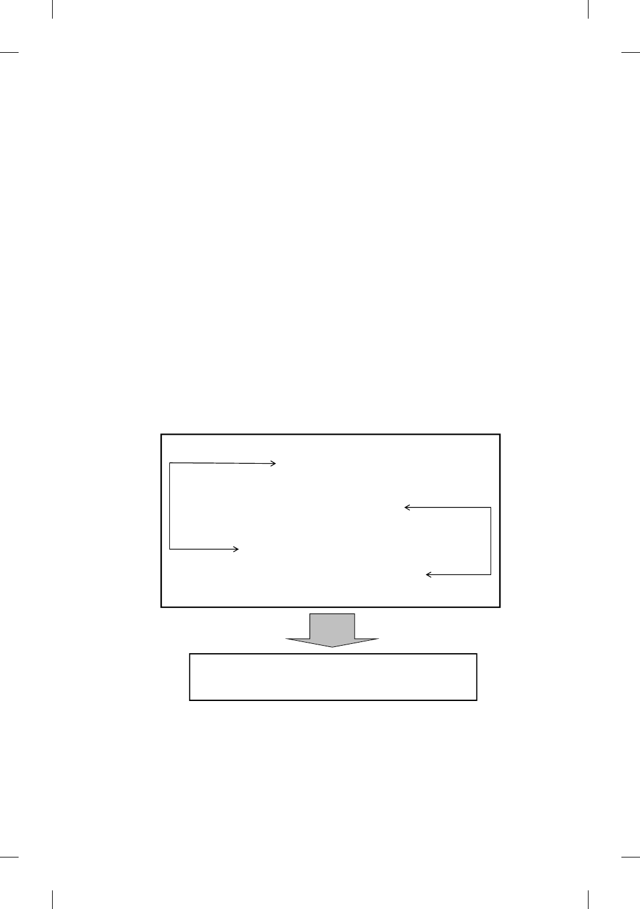

e Kingdom in Parables 53
better with the theme of vv. 10–12. irdly, they develop the theme of vv.
10–12 further by stating that there will be illumination and revelation even-
tually (i.e., all “hiddenness” will ultimately end because the lamp comes for
the purpose of illumination). is gives the christological resolution to the
paradoxical kingdom, and promises that all things will nally be made clear.
In short, we have an ABA’B’ structure for vv. 3–25 (see Diagram 3).
e archetypal parable is taught in vv. 3–9 (A), followed by comments on
the concealing function of parables in vv. 10–12 (B). Next, the explana-
tion of the archetype parable is given in vv. 13–20 (A’), and this is then
followed by sayings on concealment and revelation in vv. 21–25 (B’). Mark
then includes two further seed parables to illustrate the hidden nature of
the kingdom (vv. 26–32). No interpretation from Jesus is provided for them,
probably because Mark regards this as unnecessary once the meaning of
the Parable of the Sower has been explained, and Jesus’ role in all this is
understood. Of course, in the summary Mark reiterates that Jesus typically
explains the parables to his disciples (vv. 33–34).
Diagram 3
The Structure of 4:3-32
Two More Seed Parables (vv. 26-32)
Parable of Growing Seed (vv. 26-29)
Parable of Mustard Seed (vv. 30-32)
The Parable of the Sower and Its Interpretation (4:3-25)
Telling the Parable (vv. 3-9)
The kingdom is likened to seed sown, which engenders different responses
Concealment and Disclosure (vv. 10-12)
The theological explanation: restorative word is at work but obduracy is not removed
Decoding the Elements of the Parable (vv. 13-20)
Eventual Elimination of Concealment (vv. 21-25)
The Christological resolution: the lamp must shine, all things will be made clear
All the above then raises a pressing question: why does Mark choose only
seed parables to explain what the kingdom is? We may think of three